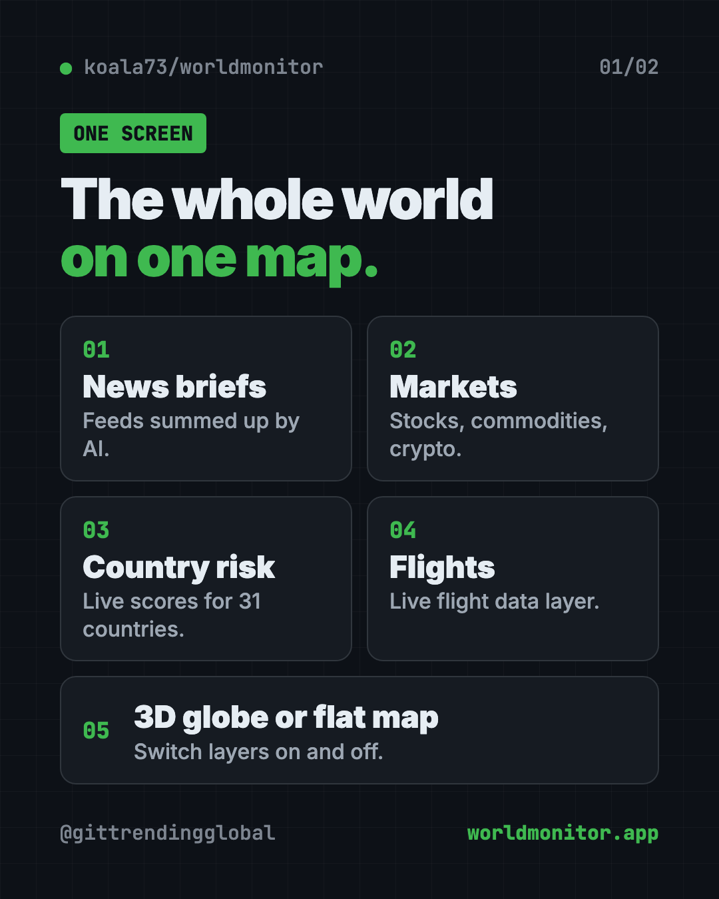
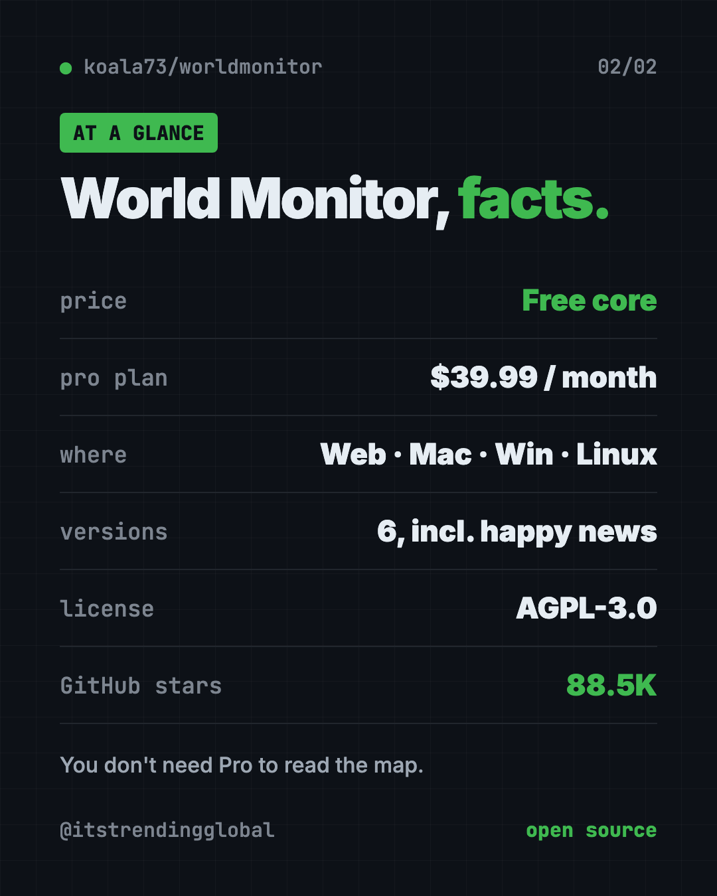

World Monitor: A Free Live World News Map With AI Briefs
World Monitor is a free live world news map. It puts global news, markets and events on one interactive globe, with short AI-written news briefs.
World Monitor is a free live world news map. It puts headlines, markets, disasters and flights on one interactive globe, and AI turns the flood of news into short briefs.
You can open it in your browser at worldmonitor.app, or install the desktop app. The code is open source, with about 88.5K stars on GitHub.
Key takeaways
- One screen for the whole world. News, markets, conflicts, weather events and flights on one map.
- AI news briefs. Curated news feeds get summed up into short, readable briefs.
- Free to use. The core dashboard is free. A paid Pro plan adds an AI analyst and daily digests.
- Six flavors. World, tech, finance, commodity, energy and a "happy" news version.
- Open source under the AGPL-3.0 license, by developer Elie Habib.
What is World Monitor?
Following world news is tiring. You open one tab for headlines, another for stock prices, another for storms and quakes, and another for a map. Soon you have twenty tabs and still miss the big picture.
World Monitor puts it all in one place. The README calls it a "real-time global intelligence dashboard." In plain words: a live control room for world events.
You see a 3D globe or a flat map. Colored layers show what's going on and where. Side panels show news feeds, market prices and more.
It can also run with local AI through Ollama, a free tool that runs AI models on your own computer. The README says that path needs no API keys.
What can you see on the map?
Here's what the README lists:
- Curated news feeds from around the world, summed up by AI into briefs.
- A 3D globe and a flat map, with layers you can switch on and off.
- A Country Instability Index, with live scores for 31 major countries.
- A finance radar: stock exchanges, commodities, crypto and an overall market score.
- Linked signals. It spots when military, economic and disaster news cluster in the same place.
- Flight data, supplied by a company called Wingbits.
- Many languages, with native-language news feeds.

How to use World Monitor (real examples)
- Morning news check. Open the map with your coffee. See the day's biggest stories by place, not by headline order.
- Follow a breaking story. A storm or an election? Zoom into the region and watch news and signals around it.
- Watch your money. Use the finance version to see markets, commodities and crypto next to world events.
- Plan a trip. Check the area you're flying to for news, weather events and unrest before you go.
- Need a mood break? The "happy" version focuses on good news. Yes, it's a real option.
💡 Tip: Each version has its own web address: tech.worldmonitor.app, finance.worldmonitor.app and happy.worldmonitor.app. In the desktop app, you switch between them inside the app.
Is World Monitor free?
Yes, the core dashboard is free. The Pro page says "the core platform remains free."
There is a paid plan too. World Monitor Pro is listed at $39.99 a month. It adds an AI analyst you can chat with, a news digest sent by email, Slack or Telegram, real-time alerts and tools to connect it to Claude or GPT. Bigger plans exist for businesses and API use.
You don't need Pro to read the map.
World Monitor at a glance
| Price | Free; optional Pro plan from $39.99 a month |
| Works offline | No, it shows live data from the internet |
| Platforms | Web, Mac (Apple Silicon and Intel), Windows, Linux |
| License | AGPL-3.0 (open source) |
| Versions | World, tech, finance, commodity, energy, happy |
| Languages | Many, with native-language news feeds |
| Best for | News fans, investors, journalists and curious minds |
Who should use World Monitor?
- News junkies who want the big picture, not twenty tabs.
- Investors who like to see markets next to world events.
- Journalists and researchers tracking stories across regions.
- Teachers and students studying current events and geography.
- Travelers checking what's happening where they're headed.
It's not a news site with long articles. It's a map-first overview, best for spotting what matters and where.

How to install World Monitor
Most people don't need to install anything. Just open worldmonitor.app in your browser.
Get the desktop app
The README has download buttons for:
- Windows (.exe file)
- Mac with Apple Silicon (M1 or newer)
- Mac with an Intel chip
- Linux (.AppImage file)
Download the right one from the Releases page on GitHub or the World Monitor website, then install it like any other app. One app covers every version.
Run it from the code
Want your own copy on your computer? You need Git and Node.js (both free). Open Terminal, then copy and paste this:
git clone https://github.com/koala73/worldmonitor.git
cd worldmonitor
npm install
npm run dev
Then open localhost:3000 in your browser. The README says it runs with no extra settings. Some data sources need their own keys, listed in the .env.example file.
Want the finance version instead? Copy and paste this:
npm run dev:finance
⚠️ Heads up: The map shows conflict and military signals next to everyday news. Some days that can feel heavy. The happy version is there if you need it.
Let Claude or Codex set it up for you
Claude Code and OpenAI Codex are AI helpers that run setup steps on your computer. You paste a request and approve each step.
Copy and paste this:
Please help me run World Monitor on my computer from github.com/koala73/worldmonitor.
1. Check that I have Git and Node.js. If not, help me install them.
2. Clone the repo and run the Quick Start steps from the README.
3. Explain each step in plain words before you run it.
4. Open localhost:3000 for me when it's ready.
5. Tell me which extra data sources need keys, and which are optional.
Then try asking:
Set up World Monitor to use local AI with Ollama, so I don't need any API keys.
Start the finance version of World Monitor instead of the main one.
Explain what the Country Instability Index on World Monitor measures, in simple words.
Our take
World Monitor is one of the most impressive free dashboards on GitHub. It turns scattered news into a single, live picture, and it looks great doing it.
What we like:
- Free to open in any browser, with no install.
- Clever versions for tech, finance, commodities, energy and good news.
- Desktop apps for Mac, Windows and Linux.
- Option to use local AI with no API keys.
- Open source, so anyone can check how it works.
What to watch for:
- A lot of information at once. It takes a few minutes to learn.
- Some data sources need their own keys if you run it yourself.
- The AI analyst and digests cost money (Pro).
- The AGPL license means businesses that change and host it must share their code.
Want more news, simpler? Read our AI news for October 2026. World Monitor was also in our trending GitHub repos for the week of July 20. For private research on your own files, try Open Notebook.
FAQ
Is World Monitor free?
Yes. The core live world news map is free to use in your browser. A paid Pro plan adds an AI analyst, digests and alerts.
Do I need to install World Monitor?
No. You can use it at worldmonitor.app. There are also desktop apps for Mac, Windows and Linux.
Where does World Monitor get its news?
It pulls from many credited sources across news, finance, energy, climate, aviation and more. The full list is in its data sources catalog.
Can World Monitor run with local AI?
Yes. The README says it can run with Ollama on your own computer, with no API keys required.
What is the World Monitor happy version?
It's a version of the dashboard focused on good news. You find it at happy.worldmonitor.app or inside the desktop app.
Get World Monitor: github.com/koala73/worldmonitor
Follow @gittrendingglobal on Instagram for one free, useful tool every day.
📲 Watch it on Instagram in under a minute
Keep reading

PureMac: Free CleanMyMac Alternative, No Subscription
PureMac is a free CleanMyMac alternative. It clears junk, fully uninstalls apps and finds duplicates, with no subscription, no tracking and no scare tactics.

Strata: Run Big Local AI on a Gaming PC, Free
Strata is a free installer that runs big, private local AI on a gaming PC. It sets up a large Qwen model, so your chats never leave your computer.

Tolaria: A Free Offline Notes App You Fully Own (2026)
Tolaria is a free offline notes app for Mac, Windows and Linux. Your notes are plain files you own, with full version history and no account.